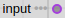
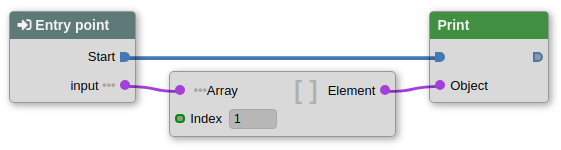

Blueprints
Blueprints are sets of nodes properly connected to produce some result or effect.
Example: a very simple blueprint that calculates the area of a circle given the radius as input:
Area = π * Radius * Radius

- Entry point where execution begins.
- Return where execution ends.
Nodes and connectors
A node is a an object that executes a defined task.Nodes have input connectors and output connectors.
Blue connectors control the execution flow, while circular connectors like are for passing data between nodes.
Data connectors with three dots (like in ) are arrays.
In the example below, execution starts on the "Entry point" node and continues on the "Print" node that has an input parameter "Object". The actual value of the input parameter is the element with index 1 of the array "input".

This is equivalent to a Java function like this:
public void f(String[] input) {
System.out.println(input[1]);
}
A blueprint might have many input parameter of any type and zero or one return value, just like a Java function.